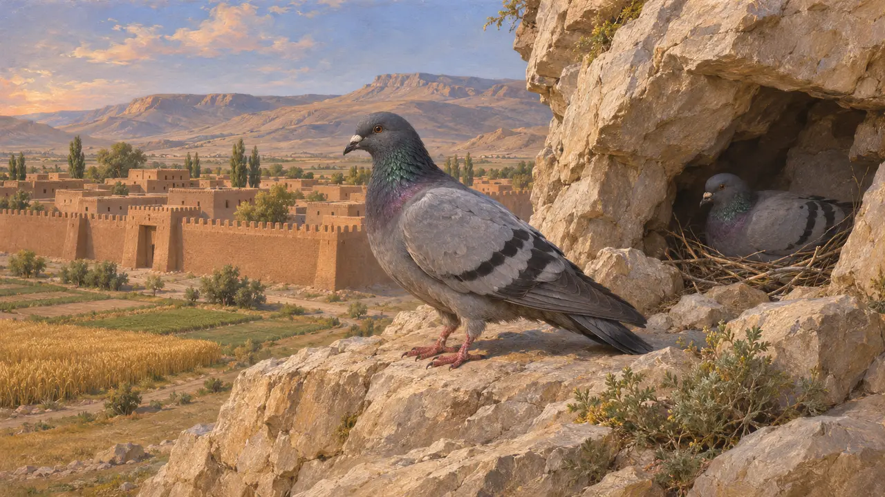
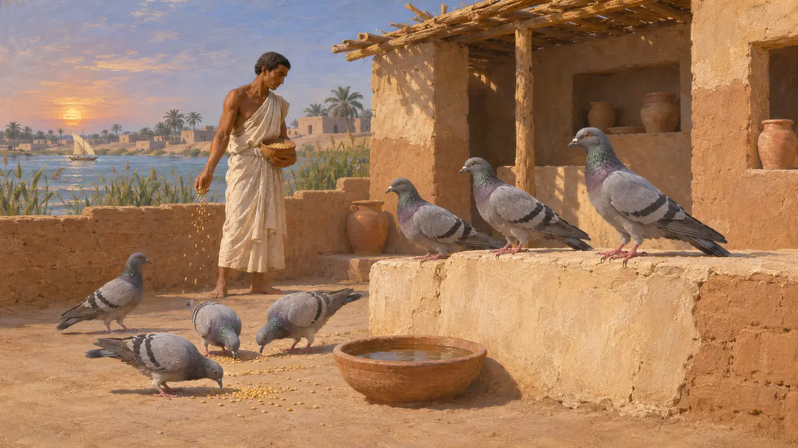
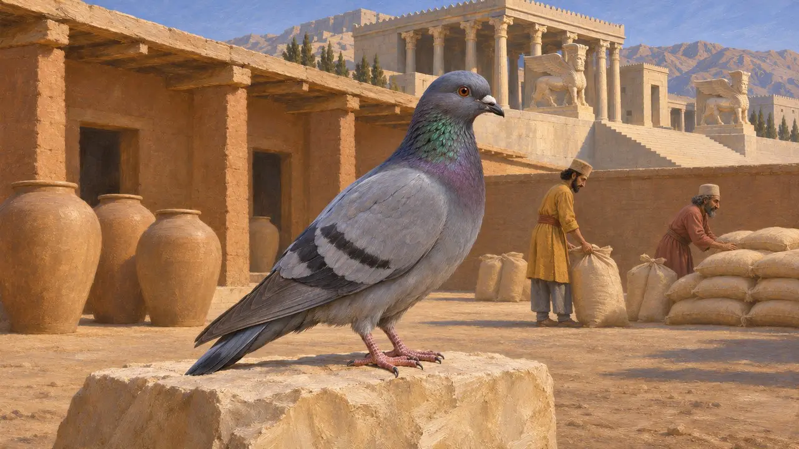
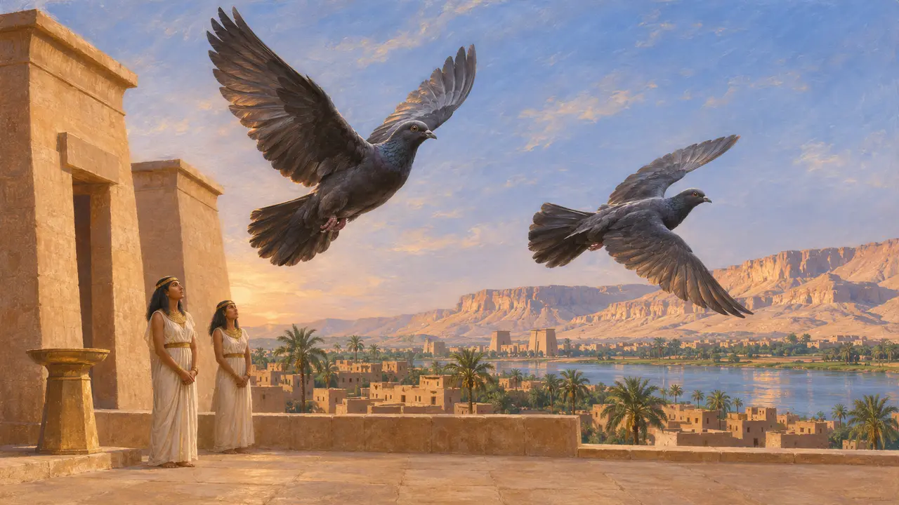

La paloma bravía
Paloma silvestre de las tierras del imperio persa, conocida por los escritores griegos, siglos VI-V a. e. c.
En el juego: Nivel 1: La tumba del fundador, Nivel 2: El Portalanza, Nivel 3: La Mentira, Nivel 4: La Terraza, Nivel 5: La Carta, Nivel 6: El Puente de Barcas, Nivel 7: Sardes arde, Nivel 8: La bahía de Maratón, Nivel 9: El Canal, Nivel 10: Las Puertas Calientes, Nivel 11: El final
La paloma bravía (Columba livia) es la antepasada salvaje de la paloma doméstica y anidaba en acantilados y edificios por todas las tierras que el imperio dominaba, desde Pérside hasta Egipto y el Egeo. Ningún texto conservado del período aqueménida describe al ave ni el trato que los persas tenían con ella. Lo que dicen las fuentes de la época sobre las palomas procede de autores griegos y se refiere al culto griego y egipcio.
En el juego: El juego dibuja palomas como aves que sobrevuelan los once niveles, de Pasargada a Platea. Son solo decorado y ninguna regla las lee.

Un ave de acantilados y ciudades
Relato antiguoLa paloma bravía anida en acantilados y grietas de las rocas, y desde hace mucho vive junto a las granjas y las ciudades amuralladas. Es una habitante natural de las regiones que dominaba el imperio. Ningún documento de la época describe a las aves salvajes, de modo que su presencia se apoya en la historia natural moderna de la especie, no en ningún texto de entonces.
Modern range of Columba livia; no ancient source cited

Palomas criadas antes de los persas
En disputaLos especialistas coinciden en que en épocas anteriores se criaban palomas en Asia occidental y en Egipto, pero se debate la fecha y la extensión de los palomares organizados en Irán. Los documentos conservados de los siglos VI y V no muestran con claridad si las propiedades aqueménidas tenían palomares. Las afirmaciones sobre ellos en este período deben tomarse con cautela.
P. Briant, From Cyrus to Alexander, 2002

Las tablillas y las raciones reales
En los documentosLas tablillas de las Fortificaciones de Persépolis registran raciones y suministros en la Pérside bajo Darío, y muestran que la administración llevaba un control minucioso del ganado y los alimentos. Aquí no se cita ninguna tablilla sobre las palomas, y las tablillas no sirven para afirmar que las palomas fueran una ración habitual.
PF series, as discussed in P. Briant, From Cyrus to Alexander, 2002

Las palomas en los relatos griegos
Relato antiguoHeródoto recoge la historia de las sacerdotisas de Dodona, según la cual dos palomas negras volaron desde la Tebas de Egipto, una a Libia y otra a Dodona (2.55), junto a la historia de los sacerdotes tebanos sobre dos sacerdotisas raptadas por fenicios (2.54). Explica las palomas como mujeres extranjeras cuya lengua sonaba como el canto de las aves (2.57).
Herodotus 2.54-57
Fuentes
- Herodotus 2.54-57
- P. Briant, From Cyrus to Alexander, 2002